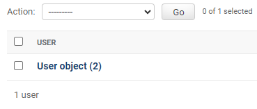
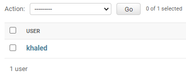

--Introduction--
In the models file you will be able to design your database tables.
Instead of typying row database code. Django facilitate that by using models.
Models file will take your code then it will interpret it to database language.
We will explain this process in Migration section.
To build your model you will need to implement the following steps always.
First step:
Give your table name and invoke the Model package to enable django read it and interpret it into database Table.
Class Table name (models.Model)
Second step:
Insert your field name, define its type and restrict it (validation).
field name = models.type(validation)
Example:

class Person(models.Model):
    first_name = models.CharField(max_length=30)
    last_name = models.CharField(max_length=30)

Explanation: first_name and last_name will be string for that we used CharField type. we want it to be at most 30 letters.
Users can't exceed the max length. if that happen they will get an error
Example:

class Category(models.Model):
    name = models.CharField(max_length=100)
    description = models.TextField()
Note: we will explain field types and validation in separated section.
Example:
class Product(models.Model):
    name = models.CharField(max_length=200)
    description = models.TextField()
    price = models.DecimalField(max_digits=10, decimal_places=2)
    image = models.ImageField(upload_to='products/')
    created_at = models.DateTimeField()

Why some fields have validation and required restriction?
The answer will be in field types section.

__str__ function
When you create an object the display result will be Model name object(number)
To change it, you can use __str__ function that enables you to change display format.
before:
class User(models.Model):
    name = models.CharField(max_length=100)

after:
class User(models.Model):
    name = models.CharField(max_length=100)

    def __str__(self):
        return self.name
